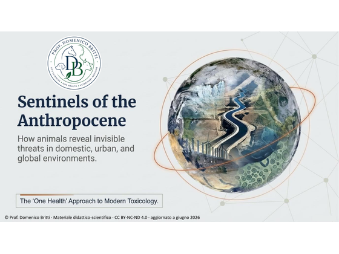
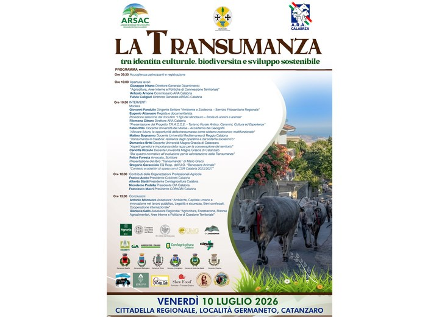
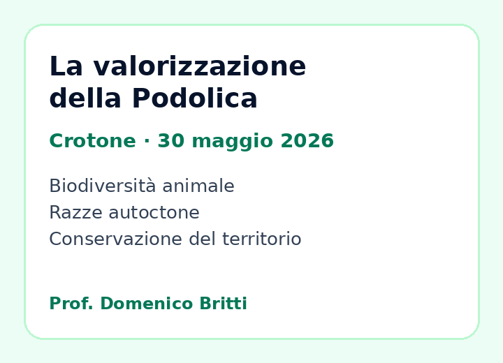

Ruolo accademico
Professore ordinario presso l’Università “Magna Graecia” di Catanzaro, Dipartimento di Medicina Sperimentale e Clinica, settore Life Sciences, One Health, Veterinary Medicine.
Life Sciences · One Health · Veterinary Medicine
Professore ordinario di Farmacologia e tossicologia veterinaria presso l’Università “Magna Graecia” di Catanzaro. La mia attività scientifica studia le relazioni tra salute animale, salute umana e ambiente, con particolare attenzione agli effetti biologici di pesticidi e contaminanti emergenti (EDCs).
Profilo
Professore ordinario presso l’Università “Magna Graecia” di Catanzaro, Dipartimento di Medicina Sperimentale e Clinica, settore Life Sciences, One Health, Veterinary Medicine.
Esperienza in ambito regolatorio, valutazione del benessere animale, farmaco veterinario e applicazione delle normative sulla sperimentazione animale.
Il lavoro scientifico è orientato alla relazione tra salute animale, salute umana e ambiente, con particolare attenzione ai contaminanti emergenti e agli impatti sistemici.
Ricerca
Ambiti strategici: tossicologia veterinaria e ambientale, esposizione a pesticidi, contaminanti emergenti, animali sentinella, sicurezza alimentare e valutazione del rischio in prospettiva One Health.
Studio dei meccanismi d’azione, delle differenze specie-specifiche, della sicurezza d’impiego e delle implicazioni regolatorie dei farmaci veterinari.
Analisi degli effetti dei composti antiparassitari e pesticidi sugli animali, sugli ecosistemi, sugli organismi non target e sulle filiere produttive.
Approccio integrato allo studio di PFAS, interferenti endocrini, antibiotico-resistenza, residui ambientali e pressioni chimiche negli ambienti agro-zootecnici.
Traduzione delle evidenze tossicologiche in strumenti decisionali, raccomandazioni di gestione del rischio, etichettatura, autorizzazione e sorveglianza.
Didattica
Un insegnamento pensato per collegare molecole, specie animali, farmacocinetica, farmacodinamica e responsabilità prescrittiva.
Pubblicazioni
Articoli e commenti
Nota storico-documentaria sulle origini paterne di Augusto. Il contributo riconsidera il cognomen infantile Thurinus, l’invettiva di Marco Antonio sul pagus Thurinus e il contesto post-annibalico del territorio thurino-bruzio.
Una nota sul ruolo del medicinale veterinario come punto di connessione tra salute animale, sicurezza alimentare, ambiente e sanità pubblica.
Una riflessione sul valore degli animali domestici e da reddito come indicatori precoci della pressione chimica negli ambienti condivisi.
Una breve nota sul bisogno di collegare chimica dei materiali, formulazioni, contaminanti emergenti e valutazione del rischio.
Presentazioni e materiali

Materiale didattico-scientifico in lingua inglese.
Presentazione sugli animali come sentinelle biologiche dell'esposizione ambientale in ecosistemi domestici, urbani e globali, con focus su pesticidi, contaminanti persistenti, bioaccumulo, cocktail effect, EDCs, PFAS, co-selezione e tossicologia One Health.

Presentazione divulgativo-scientifica.
Una sintesi scientifica sulle vie di esposizione dei pesticidi moderni, con attenzione a persistenza indoor, pathway degli animali domestici, farmacovigilanza veterinaria, PFAS, ingredienti cosiddetti inerti e gestione del rischio.

Presentazione divulgativo-scientifica.
Una lettura One Health del ruolo degli animali sentinella nell’identificazione precoce di esposizioni ambientali condivise, a partire dal caso storico dell’intossicazione da olio adulterato in Marocco.

Presentazione divulgativo-scientifica.
Una lettura One Health del cane da slitta come modello sentinella per contaminanti artici, inquinanti organoalogenati, interferenti endocrini, salute transgenerazionale, biomarcatori e valutazione del rischio.

Presentazione divulgativo-scientifica.
Una lettura culturale, zootecnica e territoriale della Podolica calabro-lucana, tra archeologia, Magna Grecia, transumanza, benessere animale, biodiversità e identità delle aree interne.
Terza missione
Partecipazione a iniziative scientifiche, istituzionali e territoriali dedicate alla valorizzazione delle razze autoctone, alla biodiversità animale, alla zootecnia sostenibile, alla transumanza e al ruolo degli animali come patrimonio biologico, culturale e ambientale.

Intervento: Aspetti genetici e importanza della razza per la conservazione del territorio.
Tema: transumanza, Podolica, biodiversità, sviluppo sostenibile, identità culturale e zootecnia territoriale.

Iniziativa dedicata alla Podolica calabrese, con interventi accademici, istituzionali e del mondo agricolo.
Il programma riporta la partecipazione del Prof. Domenico Britti tra i relatori.
Progetti
Modelli di gestione che riducono la dispersione di sostanze chimiche nei pascoli e valorizzano la qualità sanitaria, ambientale e nutrizionale delle produzioni.
Iniziative dedicate al rapporto tra parassitismo, benessere animale, biodiversità, residui ambientali e sostenibilità dei sistemi zootecnici.
Percorsi didattici e culturali orientati alla medicina veterinaria come strumento di cooperazione, cura del creato e dialogo tra Paesi.
Contatti
Per collaborazioni scientifiche, attività seminariali, progetti interdisciplinari e iniziative nell’ambito della farmacologia veterinaria, tossicologia ambientale e One Health.